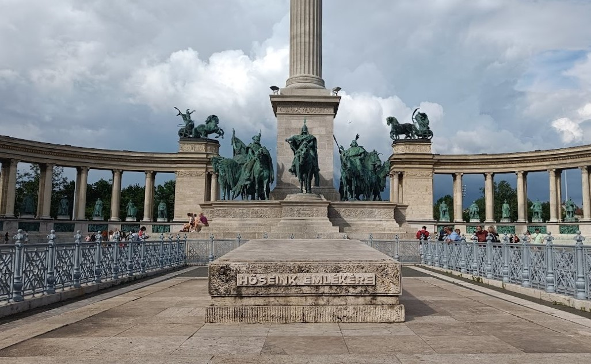
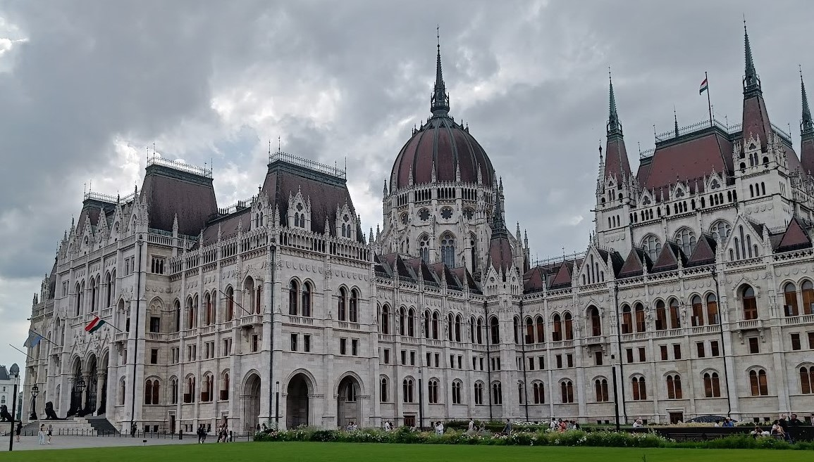

Budapest was a lovely little holiday where I got to spend time with my family
and had them give me a lovely tour of the city. Budapest has a range of
spectacular locations, most of which we were able to visit whilst I was there.
One of the first places we went to was Buda Castle. It took a good couple of hours
to go around the place fully but the intricate structures and deep history
behind the place made it worth the time.
From Buda Castle, there was a great view of the city, although unfortunately,
it happened to be quite cloudy specifically whilst we were at the castle.
After having a few pastries and watching a street performer, the weather warmed
up a little and we made our way to Gellert Hill Waterfall. Climbing to the top
of it gave yet another view of the city from a different angle. We then drove
further central to have a traditional Hungarian meal known as Lángos, consisting
of fried dough (generally) topped with sour cream and grated cheese. Afterwards,
we paid a visit to Heroes' Square, a monument which represents the original
founders of Hungary.

We weren't able to spend as much time in the area as we would've liked, as a
sudden influx of rain cut our trip short.
When we first visited the Hungarian Parliament Building, I was taken aback by the
beautiful architecture of the building, as well as the sheer scale of it.
(For reference, the picture below only shows about half of the building, and
that's just one side of it).

The building also happened to be situated right next to the river, so we made
our way around there and spent some time admiring the view. The rest of the
holiday was spent exploring the local area and spending time wtih my family.
I cannot wait to go back :)